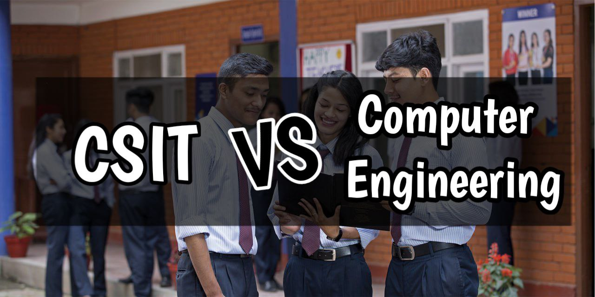

CSIT vs Computer Engineering | Which One Is Better And Why?

Table of Content
- BSc.CSIT in Nepal
- Mission Of BSc.CSIT Course
- Eligibility Criteria to Study BSc.CSIT in Nepal
- Admission Criteria to Study BSc.CSIT in Nepal
- FEE Structures of BSc.CSIT Course
- Job Prospects of BSc.CSIT Graduates in Nepal
- Computer Engineering in Nepal
- Eligibility criteria to Study Computer Engineering
- IOE Entrance Exammination
- Scopes of Computer Engineering in Nepal
- FEE Structures of Computer Engineering Course
- Job Prospects of Computer Engineering Graduates
- Which One is Better, CSIT or Computer Engineering?
Want To Learn Freelancing As A Web Developer?
Learn More: Click Here→
BSc.CSIT in Nepal
Bachelors of Science in Computer Science and Information Technology (BSc.CSIT) is a four year course affiliated to Tribhuvan University which is responsible to provide all sorts of knowledge in the field of Information Technology and Computing. Wholeover Nepal, There are more than 55 TU affiliated colleges whose primary work is to offer CSIT programs to the students.
In addition, BSc.CSIT conducts various programs which include conventional lectures as well practical and project works. These programs help to boost the confidenc level in students to use the principles of both computer science and Information Technology at the same time in order to solve the real world problems.
With the emergence of new technologies in IT field, CSIT Association of Nepal updates its curriculum
time and often. In order to ensure healthy theoritical knowledge along with some practical environment,
CSIT degree may not be as important than the skills but it can help CSIT graduated students to tackle
new challenges which emerge in today's modern computational environment.
The B.Sc.CSIT programs help the students to solve both theoretical and practical based problems
which will enable students to effectively participate in solving the complex problem of the IT
industry.
Mission Of BSc.CSIT Course
The mission of the BSc.CSIT course is to make the students capable to work in the field of Information Technology and pursue their career. After the completion of this degree, a student will be able to choose their own paths in the IT secotors and create their own e-media products, sell services and work on their startups. He/she can debug the software and hardware related problems depending on their chosen areas of specializations.
The main missions of BSc.CSIT course include:
- To offer intensive knowledge in the theory, design, programming and application of computers.
- To provide an in-depth understanding of computer system softwares.
- To make students able to handle multi-tasking situations and to assess and develop computer based solutions.
- To develop creative and analytical skills.
- To generate students to work in various IT applications in different business sectors.
- To create knowledge of computer and programming logic environment in IT.
Scopes of Bsc.CSIT in Nepal | Career Options, Starting Salary, Job Opportunities
Learn More: Click Here→
Eligibility Criteria to Study BSc.CSIT in Nepal
In order to be eligible to study BSc.CSIT in Nepal, A candidate:
NOTE: Both Biology & Maths Group Science Students Are Eligible.
- Should have successfully completed a twelve year of schooling in the science stream or equivalent from any university, board or institution recognized by TU.
- Should have successfully passed the entrance examination conducted by TU securing at least 35% marks. Compiled with all the application procedures.
- Should have secured a minimum of second division in their +2 or equivalent OR should have secured at
least
C in all subjects in Grade 11 and Grade 12 by taking Physics and Mathematics of 100 marks.
OR
Passed A level in Science (have studied Physics and Mathematics of 100 marks) and passed at least in D Grade
OR
Passed 3 Years Diploma in Engineering program from CTEVT taking both Physics and Mathematics.
If a student has each above mentioned qualifications then he/she is eligible to apply for the entrance examination of BSc.CSIt course inside Nepal.
Admission Criteria to Study BSc.CSIT in Nepal
A student eligible to study the B.Sc. CSIT course should collect and submit the admission form from any of the BSc.CSIT colleges which come under the TU inside Nepal. Currently in 2023, there are more than 55 such colleges which are offering BSc.CSIt in Nepal. The admission form generally opens during Shrawan / Bhadra every year if everything goes as per planning of Tribhuwan University.
Entrance Exammination
- Tribhuvan University, Institute of Science and Technology, conducts the entrance examination every year.
- The Entrance Examination will be of 100 Full Marks including the subjects of 10+2 level or equivalent incorporating English, Mathematics, Physics and Chemistry subjects and the pass marks is 35.
- All the Questions of Entrance Examination will be Objective Type (MCQs).
- The Examination Time Duration will be of 2 hours.
FEE Structures of BSc.CSIT Course
The Fee of BSc.CSIT 4 year course in the government colleges of Nepal can range between 3 – 4 Lakhs. Whereas, In the case of private colleges, the Fee can range anywhere between 6 Lakhs to 10 Lakhs. Moreover, Many colleges are affiliated with foreign universities, and have a fee structure of more than 15 Lakhs.
There is a provision of Quotas for the minority groups. The people who are economically as well socially backward, are able to study CSIT course with minimum fee possible. They are offered free education by the government of Nepal in the government colleges. If you come under this category and want to pursue a better career in IT sector then this quota can help you study this course.
IT Career in Nepal, Scopes of IT & Future Prospects
Learn More: Click Here→
Job Prospects of BSc.CSIT Graduates in Nepal
The B.Sc. CSIT graduates who possess quality and cometitive skills have a prosperous career opportunities at different government, non-government, private and public organizations, like software companies, telecommunications, computer networking companies etc. especially as a :
- Software Developer
- Web Developer
- Network Administrator
- Database Administrator
- IT Manager/Officer
- Project Manage
- Document Specialist
- Technical Writer
- Content Creator and so on.
Computer Engineering in Nepal
Bachelor of Computer Engineering in Nepal is a 4 years computer science course whcih includes over 8 semesters. There are more than 15 institutions in Nepal (inside and outside Kathmandu) which are offering this course in affiliation to Tribhuvan University, Pokhara University, Kathmandu University and Purbanchal University.
Studying Computer Engineering in bachelors education helps to produce skilled human resources who can
help in the
development of Nepal’s technological aspect. The degree of computer engineering is respected all over
the world
and students can study their masters even in foreign countries as well.
Eligibility criteria to Study Bachelor of Computer Engineering in Nepal
For those who wish to study computer engineering program in TU colleges, need to be meet certain criterias as mentioned below:
- Students must have passed Intermediate Level/ +2 in Science with mathematics as a subject with a minimum of 45%.
- Students must have appeared on the IOE Entrance examination and secured a minimum of 40% (which is a passing score). Students must bring a minimum of 40% to study any engineering at TU run engineering institutes.
IOE Entrance Exammination
The widely known IOE entrance examination in Nepal is taken in an yearly basis in which thousands of students apply in order to study computer engineering courses within Nepal. The entrance exam questions are taken from 5 subjects - Mathematics, Physics, Chemistry, English and Engineering Aptitude.
At past students had to give the exam on papers but now they've to submit their entrance questions in computers. For this, students need to be prepared both physically and mentally.
If you want to prepare before the IOE entrance exams, then different institutes like PEA and SEA offer Engineering preparation courses. These courses are of 3 months to 1 year long. These courses cost from NPR 12,000 to NPR 25,000 depending upon the length of the engineering preparation course and institute you choose.
Scopes of Computer Engineering in Nepal
Computer Engineering is one of the highest-paid professions in Nepal. The computer engineering graduates can earn money ranging from NPR 20,000 per month for freshers to NPR 2 Lakhs per month. The salary depends on the work experience, skills of the graduates. They can find jobs in IT companies, data companies, health sectors, education sectors, and so on. There are various governmental IT related jobs where a computer engineering graduate can apply. Other than those governmental organizations, there are a number of private companies offering jobs for computer engineers.
Easy Ways To Make Money Online in Nepal
Learn More: Click Here→
FEE Structures of Computer Engineering Course
The cost of studying Computer Engineering in Nepal differs from college to college. For the government engineering college to Constituent campus of TU like Pulchowk campus, Thapathali Campus, WRC, and ERC, the tuition fee of Bachelor of Computer Engineering is the same. For the regular students (regular students means the students who are fully funded), the cost is just about NPR 15,000 for 4 years of Study. For the paying students, the fees as about Npr 2,80,000 for 4 years of study.
Likewise, for the private engineering colleges affiliated with TU, the fee structure of computer engineering ranges from NPR 8 Lakhs to NPR 13 Lakhs for 4 years of study. For engineering colleges affiliated with Pokhara University and Purbanchal University, the tuition fees range from NPR 6 Lakhs to NPR 10 Lakhs for the total course.
Finally, the bachelor of computer engineering in KU costs about NPR 6 Lakhs for 4 years of study. Computer Engineering courses in Nepal comes with decent scholarships. The topper of Each Computer Engineering is waived off entire tuition fees. Additionally, other than the topper as well, some of the best performers of the class are partially waived off the tuition fees depending on the provision of college.
Note: The above-mentioned fees are for students of Nepal. For foreign students, the tuition fees are
generally higher than the above-mentioned fees.
Job Prospects of Computer Engineering Graduates
There are various job prospects for a computer engineering graduates inside and outside Nepal. Some of the renowned jobs with their expected salary range are listed below:
- Software Engineer: NPR 25,000- NPR 150,000
- Web Developer: NPR 20,000- NPR 50,000
- Back end Developer: NPR 30,000- NPR 1,20,000
- Mobile App Developer: NPR 20,000- NPR 1.5 Lakhs
- Data Engineer: NPR 35,000- NPR 1.5 lakhs
- Machine Learning Engineer: NPR 35,000- NPR 1.2 Lakhs
- Database Manager: NPR 35,000- NPR 1.5 Lakhs
- Lecturer: NPR 32,000- NPR 60,000
The above mentioned data ranges may vary as per the companies and skills of an individual. If a graduate wishes to work abroad as such profession then he/she can earn more . IT professions are more likely to offer the candidates with more skills then the degree. But, the degree of computer engineering for graduates can help them potential job offers.
Which One is Better, CSIT or Computer Engineering?
In order to answer this question, we need to compare them featuring their courses, scopes, job prospects
and
understand the views and thoughts from seniors who once graduated either of them and share their
experience.
We've listed some of the important points which should be known by every IT learning students before
joining
the IT field. They are as follows:
Choose Computer Engineering IF:
- You can allocate plenty of your time to study on course materials of Computer Engineering.
- You prefer to be in a studious environment with a primary aim of achieving your IT goals.
- Have enough courage to study the vast course which Includes informations about both hardwares and softwares.
- Want to pursue any of the career options : Machine Learning Engineer, Software Developer, Database Manager, so on.
-
You are a tech enthusiast who likes to hold a title of engineer in your name.
If you think, you can tackle those obstacles and push yourself with the aim to become a computer
engineer, then
computer engineering can be one of the best options to consider.
Choose CSIT IF:
- You prioritize gaining skills rather than just a degree.
- You are more passionate on softwares rather than hardwares.
- You want to get a real experience and a lover of developing programs and softwares.
- Have more interest in coding and researching.
- Don't want to waste time to study theoritical knowledge like in computer engineering.
If you believe, and find yourself comfortable in studying CSIT to pursue your career of your interest then CSIT can be one of the best options to consider.
Both CSIT and Computer Engineering hold their own potential to generate skillful students. Those who prefer learning softwares and without any burden of additional theories, can choose CSIT as their primary option. And those who want to study hardwares or software can choose Computer Engineering. Computer Engineering is comparatively more tough than CSIT as it includes additional theoritical informations. Computer Engineer graduates can hold more potential of gaining governmental jobs than CSIT graduates. But in today's technical world, skills play significant role rather than just a degree.
After pursuing any of them, a student will be able to solve technical problems. He/she can work as freelancer if possesses some skills along with the knowledge. These degrees increase the possibilites of getting more opportunities as an IT professional in the future. Pursuing skills as well knowledge from CSIT or Computer Engineering should be the major priorities to become a successful IT personnel.
Want To Learn Freelancing As A Web Developer?
Learn More: Click Here→